Pilotez, sécurisez et tracez en temps réel tout ce qui entre et sort de votre site : visiteurs, employés, biens et marchandises. Pour Odoo 18. Gratuit.
Odoo 18 · Gratuit · Visiteurs & badges · Badgeage employés · Liste d'évacuation · Tableau de bord temps réel
Le cahier de l'accueil, les badges écrits à la main et les colis oubliés sur un coin de bureau, c'est fini. Avec ce module 100 % gratuit, votre accueil sait à tout instant qui est dans le bâtiment, pour voir qui, et avec quoi.
Entreprises, administrations, banques, usines, hôtels, écoles, cliniques, cabinets et tout site qui reçoit des visiteurs, des livraisons ou qui veut suivre la ponctualité de ses équipes.
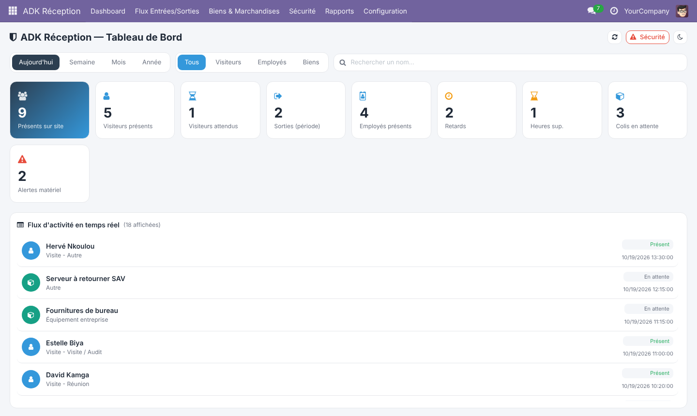
Visiteurs, employés et marchandises sont suivis au même endroit, avec le même tableau de bord et le même flux d'activité.
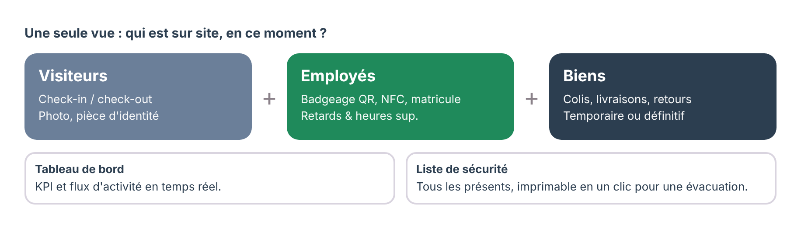
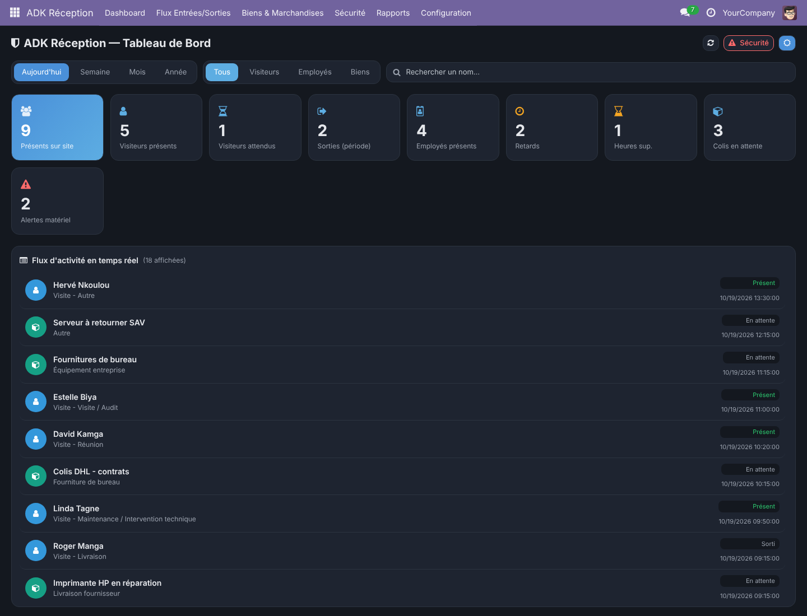
Le module ajoute deux rôles d'accès. Vérifiez qu'ils correspondent à l'organisation de votre accueil avant la mise en production.
Dans Configuration, on adapte les listes (motifs de visite, types de pièce d'identité, catégories de matériel, méthodes de badgeage, types de biens) et les horaires de travail attendus avec leur tolérance de retard. Des valeurs par défaut sont fournies à l'installation.
L'agent sélectionne ou crée la fiche du visiteur, choisit l'hôte et le motif, saisit la pièce d'identité et prend la photo par webcam. Les rendez-vous peuvent être préparés à l'avance (statut Attendu).
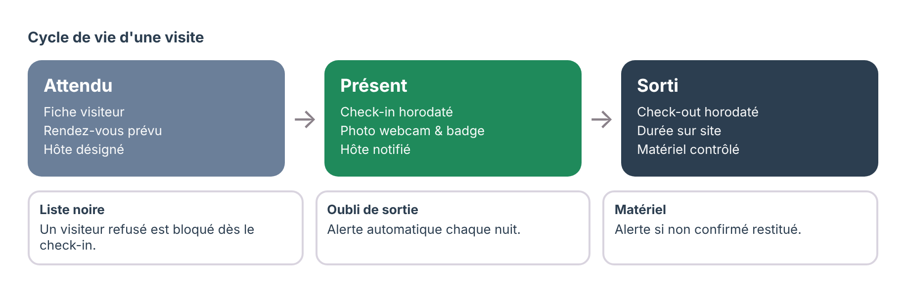
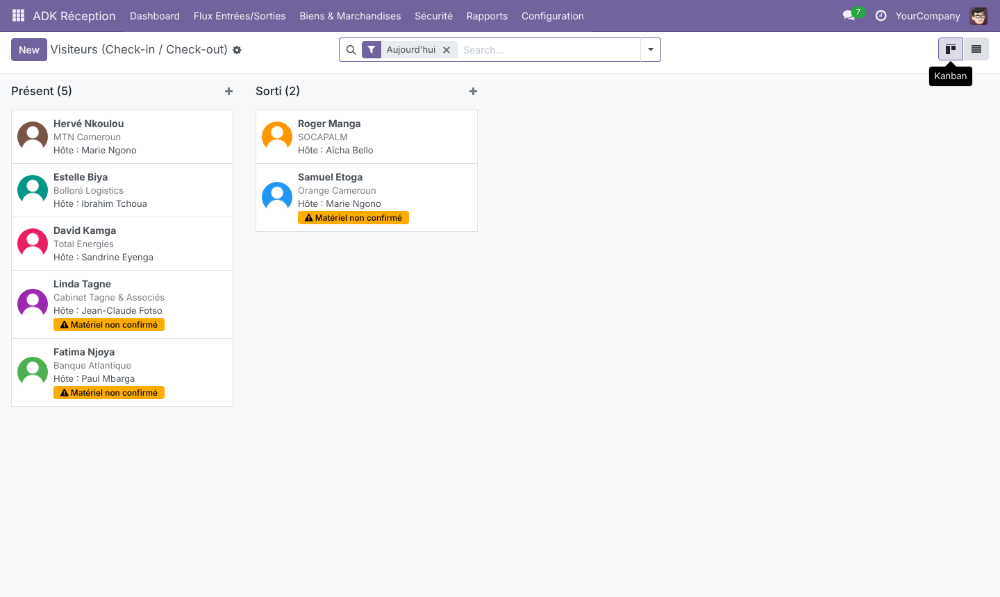
Un clic sur Check-in horodate l'arrivée à la seconde près. L'employé visité reçoit immédiatement une notification et une activité (et un e-mail si vous activez l'option). Le badge visiteur s'imprime en un clic, avec la photo, le nom, l'hôte, le motif et l'heure d'entrée.
Un visiteur placé en liste noire est automatiquement refusé au check-in.
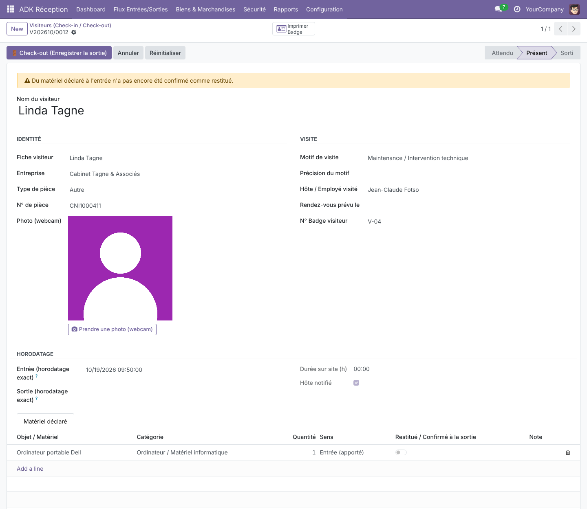
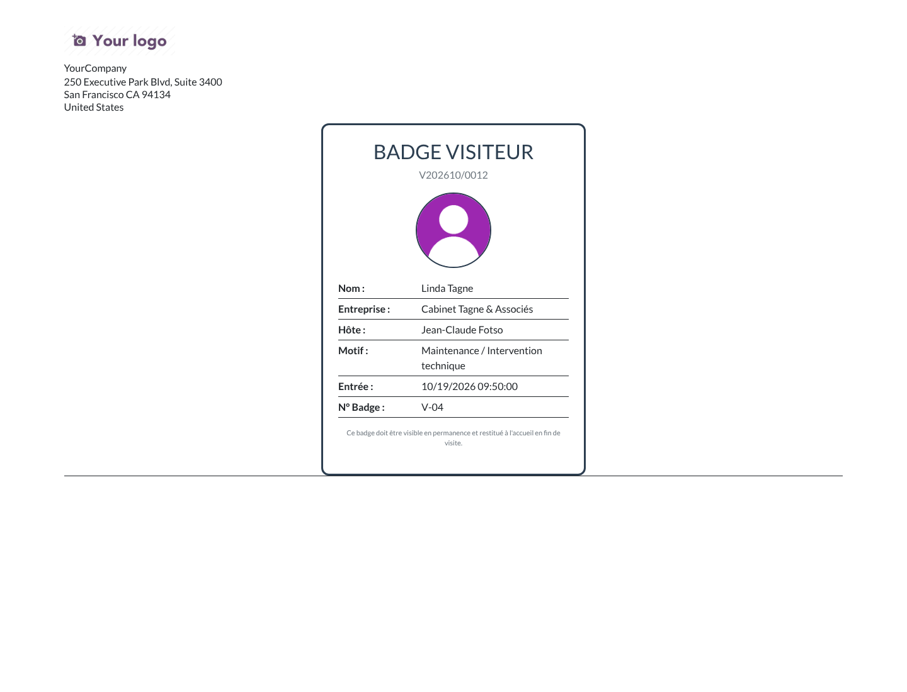
Ordinateur portable, outils, équipement… : le matériel apporté ou emporté est listé sur la visite. À la sortie, le module avertit si un objet n'est pas confirmé comme restitué.
La sortie est horodatée et la durée sur site calculée. Les visiteurs oubliés sont signalés automatiquement le lendemain par une tâche planifiée. L'heure peut aussi être saisie manuellement si l'agent est occupé : toute modification reste tracée dans l'historique.
Chaque entrée et sortie est enregistrée (QR code, NFC, matricule ou saisie manuelle). Les retards et heures supplémentaires sont détectés automatiquement d'après vos horaires et votre tolérance, et mis en couleur dans la liste.
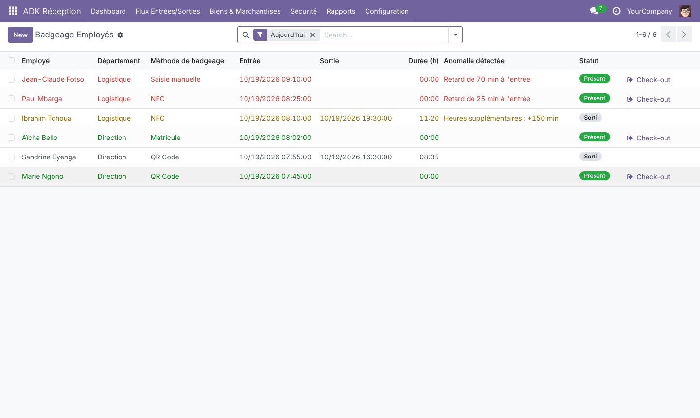
Colis, livraisons, fournitures, équipements à réparer : chaque mouvement est enregistré (entrée ou sortie, temporaire ou définitif), rattaché au transporteur et au destinataire interne, avec date de retour attendue et statut En attente / Traité.
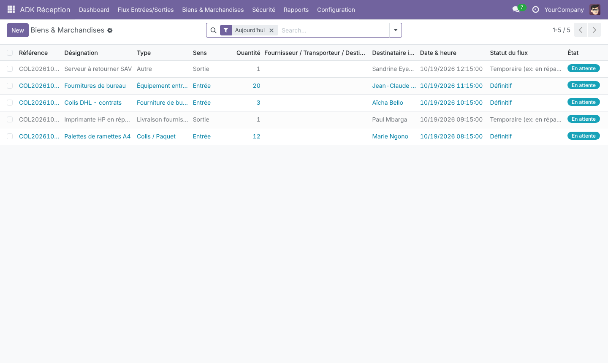
Depuis le bouton Sécurité du tableau de bord, la liste de toutes les personnes présentes (visiteurs et employés, avec hôte ou département et heure d'arrivée) s'imprime en un clic.
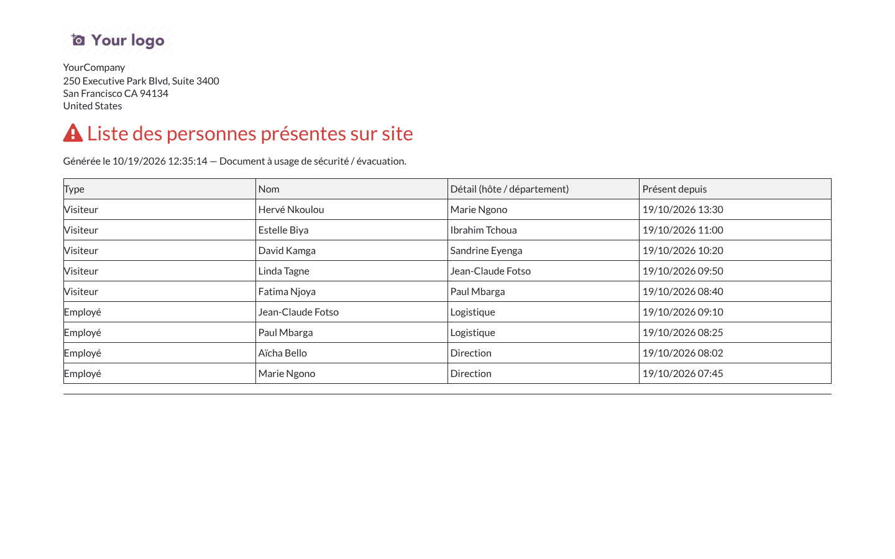
Le générateur d'export produit l'historique d'une période (visiteurs, employés, biens ou tout) en PDF, Excel ou CSV.
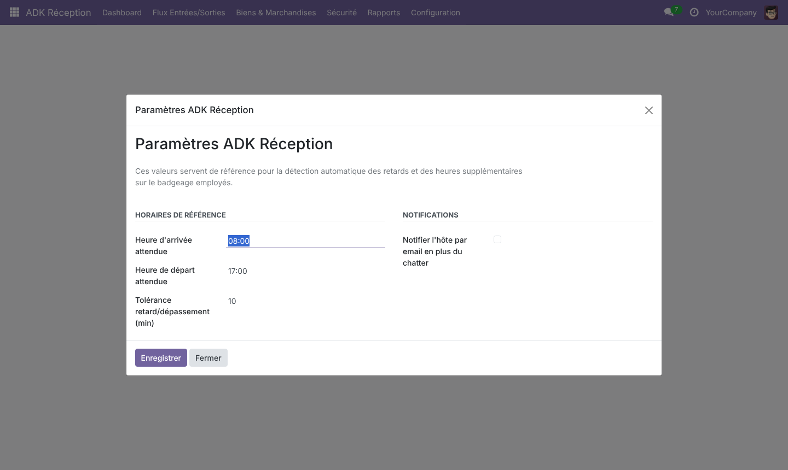
Module natif Odoo 18, construit sur Employés (hr) et Discuss (mail).
Auteur : Kambeu Henang Ange Duval
Support : duvalkambeu61@gmail.com
Une question, un bug, une demande d'évolution ?
Contactez-nous, nous répondons rapidement.